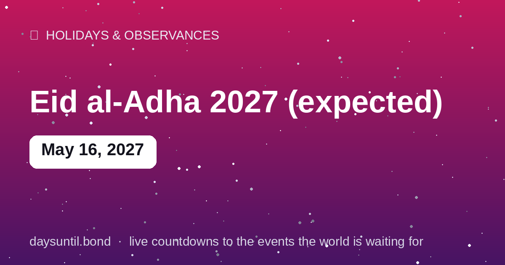

When Is Eid al-Adha 2027?
Eid al-Adha 2027 (expected) falls on Sunday, May 16, 2027.
The live counter above updates every second in your local time zone. The date and weekday are shown in the event details.

Quick facts
| Expected date | Sunday, May 16, 2027 |
|---|---|
| Hijri date | 10 Dhu al-Hijjah 1448 |
| Day of Arafah | Saturday, May 15, 2027 |
| Date status | Tentative; local moon sighting may shift by one day |
About Eid al-Adha 2027 (expected)
Eid al-Adha 2027 is tentatively expected on Sunday, May 16, 2027 (10 Dhu al-Hijjah 1448) in the Umm al-Qura and Tunisia calendars. Local moon sighting can move the observance by one day.
The countdown uses May 16 as the current planning date. Check the official announcement in your country closer to the festival.
When is Eid al-Adha 2027?
Eid al-Adha 2027 is currently expected on Sunday, May 16, 2027, corresponding to 10 Dhu al-Hijjah 1448 in the Umm al-Qura calendar. Timeanddate's Tunisia holiday calendar lists May 16 as a tentative date, and the 1448 AH Tunisia calendar also places Eid on that Sunday.
Islamic holidays depend on the lunar calendar and local moon-sighting announcements. The date may move by one day in some countries, so treat May 16 as the current planning estimate and check your local religious authority closer to the festival.
The Day of Arafah and the days of Eid
The Day of Arafah is expected on Saturday, May 15, 2027 (9 Dhu al-Hijjah), the day before Eid al-Adha. Eid begins on 10 Dhu al-Hijjah and is observed over the following days according to local religious and public-holiday arrangements.
In Tunisia, public-holiday calendars currently list May 16 as Eid al-Adha and May 17 as an additional holiday. Other countries may publish different holiday periods or working-day arrangements.
What Eid al-Adha commemorates
Eid al-Adha, often called the Festival of Sacrifice, commemorates Prophet Ibrahim's devotion and willingness to obey God. Many Muslim families mark the occasion with congregational prayers, charity, sharing food and the ritual sacrifice where permitted and practised.
Customs and public-holiday arrangements vary by country and community. The countdown provides a calendar reference; it is not a religious ruling or a substitute for local guidance.
Why the date can differ by country
The Islamic calendar is lunar. The beginning of Dhu al-Hijjah is determined through calendar calculations or crescent-moon observation, depending on the authority followed. If a country confirms the month one day later, Arafah and Eid can also move by a day.
For that reason, a date shown on an international countdown should be treated as tentative until the relevant national authority or local religious body announces the date.
How to use this Eid al-Adha countdown
The timer counts toward the current expected date of May 16, 2027. It uses the date stored for this event and your device's local time zone. If your country announces May 17 instead, use the local announcement as the final authority.
If you are planning travel or time off, check your country's public-holiday calendar and transport schedules. In Tunisia, the current planning calendar lists May 16 and May 17 as the Eid holiday period.
Your Eid al-Adha 2027 (expected) countdown milestones
It is easier to plan against fixed points than against a number that moves. These are the dates on which the countdown to Eid al-Adha 2027 (expected) passes each marker between now and the day itself — the last one falls on Saturday 15 May, when there will be 1 day left.
| Milestone | Day | Date | Remaining |
|---|---|---|---|
| 100 days | Friday | 05 February 2027 | 100 days to go |
| 50 days | Saturday | 27 March 2027 | 50 days to go |
| 30 days | Friday | 16 April 2027 | 30 days to go |
| 14 days | Sunday | 02 May 2027 | 14 days to go |
| 7 days | Sunday | 09 May 2027 | 7 days to go |
| 3 days | Thursday | 13 May 2027 | 3 days to go |
| 1 days | Saturday | 15 May 2027 | 1 day to go |
How the remaining time breaks down
173 days is the headline, but it is rarely the number that helps. 123 of those are weekdays and 50 fall on a weekend, which is the split that matters if you are planning around work. It is 24 weeks and 5 days, or roughly 5.7 months, or about 4,152 hours.
| Unit | Until Eid al-Adha 2027 (expected) |
|---|---|
| Days | 173 |
| Weeks | 24 weeks and 5 days |
| Months (approx) | 5.7 |
| Weekdays | 123 |
| Weekend days | 50 |
| Hours | 4,152 |
| Sleeps | 173 |
Working days are Monday to Friday and do not subtract public holidays, which vary by country and employer — the full month-by-month split is on our weekday page for Eid al-Adha 2027 (expected).